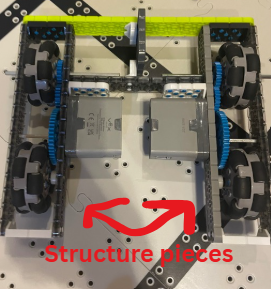
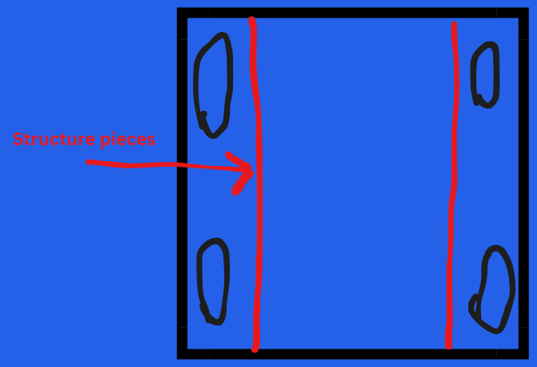

Building a drivetrain is one of the most critical, yet challenging, steps in creating a competitive VEX IQ robot. The drivetrain impacts speed, maneuverability, stability, and the overall performance of your robot. So put your best effort into it!
1. What to Avoid
- Tank Drive: Each side of the robot is controlled independently. This type can be too heavy and is not ideal for the VEX IQ Mix and Match game.
- H-Drive: Uses a combination of wheels for omnidirectional movement. This design is extremely difficult to build, requires four motors, takes up a lot of space, and is generally not worth it for this game.
2. What to Build
- Based on my experience, a 14x16 or 18x20 drivetrain is best for stability and space.
- Use omniwheels to improve turning ability.
- Use a 1:2 gear ratio for this game (Mix and Match), as it provides speed while maintaining control.
- Keep the robot light by ensuring every piece serves a purpose. For example, use structural pieces that support multiple functions like holding wheels, rather than just being fillers.


3. Building Tips
- Keep your drivetrain symmetrical to ensure straight movement.
- Use structural pieces to strengthen the frame and prevent wobbling.
- Test your drivetrain frequently during construction to catch misalignments early.
- Plan space for other mechanisms, like intakes or lifts, to avoid interference.
4. Programming and Testing
- Test your drivetrain in driver control mode first to get a feel for responsiveness.
- Adjust motor speeds and direction as needed for smooth turns.
- In autonomous mode, carefully program distances and turns using sensors to improve accuracy.
5. Get Help Tailored to Your Robot
With the right design, careful testing, and incremental improvements, your VEX IQ drivetrain can become the foundation of a strong, competitive robot.